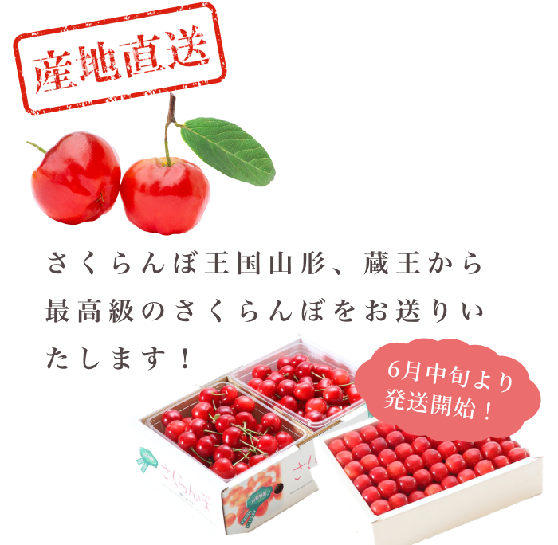
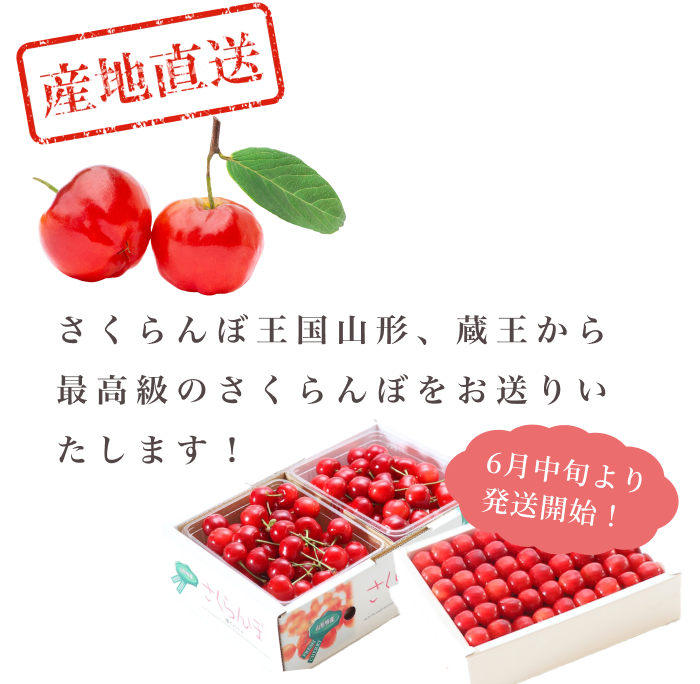

「さくらんぼの王様」や「果実の宝石」と
呼ばれる佐藤錦・紅秀峰を期間限定で
ご用意いたしました！
食べごちが厳選した、最高級のさくらんぼを
ぜひをご賞味ください。


 

美味しい! を超えた 感動をお届けします
\ どこでうまれたの？/
須 貝 農 園 に つ い て
山形、蔵王みはらしの丘麓で美味しい
さくらんぼを送り続けて今年で28年目。
家族3人で経営し、牛を15頭飼っている、
規模・作物の品質の両方で
地元でも有名なさくらんぼ農家です。
栽培方法は自然の力を存分に生かす為、
酵母菌、乳酸菌、納豆菌、ホタテ粉など
多数の微生物や、有機資材で
土を元気に育てる事に力を入れています。
美味しいを超えた感動を、
皆様にお届けいたします。
\ おおきくてあまい！/
支持される美味しさ・
品質へのこだわり
佐藤錦は平均糖度が20度前後ですが、
須貝農園では
最高糖度が
26.2度を記録しました！
地元でもとても評判のさくらんぼで、
「須貝錦」とまで呼ばれています！
一粒一粒手作業で丁寧に
まごころこめて
箱入れしています
採れたての旬の甘さ
山形のフルーツを代表する味を
ぜひお試し下さい！
\ 日本一！山形のさくらんぼ /
お
届
け
で
き
る
さ
く
ら
ん
ぼ
山形が誇る、
さくらんぼの王様「佐藤錦」
糖度が高く、酸味とのバランスが抜群に良い品種といえます。
プリプリと口の中ではじける食感はたまらない美味しさ！
サクランボのなかで最も人気の高い「佐藤錦」は、果樹王国と呼ばれる山形県でも特別な存在です。
甘み
★★★★
酸味
★★
■山形サクランボの主力品種！
高級さくらんぼの代名詞
■「ナポレオン」 × 「黄玉」
■収穫時期：6月中旬～下旬
（中生種）
酸味が少なく、
甘味濃厚な大粒品種「紅秀峰」
「佐藤錦」と「天香錦」という品種をミックスさせてできたさくらんぼです。
佐藤錦と比べて、実が締まってパリパリの食感が特徴で、
大粒で色もきれいなので見た目に優れており、
果肉がしっかりしているため日持ちも良いという特徴があります。
おおきくてとっても甘〜い！
甘み
★★★★
酸味
★
■糖度抜群！人気上昇中の晩生品種
■「佐藤錦」 × 「天香錦」
■収穫時期：6月下旬～7月初旬
（晩生種）
\ 食べごち厳選！/
商 品 一 覧
食べごち厳選、最高級のさくらんぼを取り扱っております。
6月中旬より順次発送いたします。
購入は
こちら
只今、ご予約受付中！
甘さと酸っぱさの
絶妙なバランス！